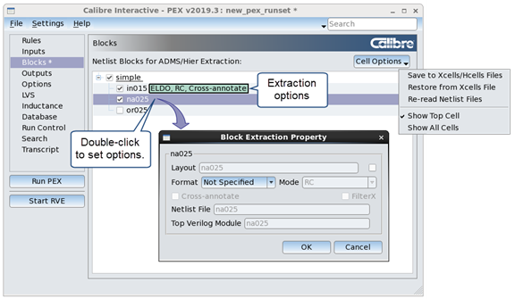

The Blocks page
displays an alphabetical list of cells found in the source netlist
files. Each cell entry contains an expansion control and the number
of placements of each subcell found within its parent cell. You
can select the extraction format, extraction mode, cross-annotate
flag, and output netlist file for each extracted cell.
A next
to a cell name in the hierarchy tree indicates that the cell is
listed in the xcell file as a primitive cell (the ‑P option), and
the cell contents will not be extracted.
Tip You can discard
changes in the Blocks page and refresh the
view at any time by clicking the Cell Options button
in the top right corner of the page and choosing Restore
from Xcells File and Re-read Netlist Files.
Procedure
- (Optional) Load the rules file: On the Rules
page, click next
to the rule file name.
If the rule file includes
PEX Netlist ADMS statements, the information is displayed on the Blocks page.
- Choose to
display the Blocks page.
- Locate the cell you want to
specify extraction options for by expanding the tree view as needed.
If needed, click Cell Options in the top
right corner of the page and choose Show All Cells.
- Click the checkbox next to
a cell name to mark the cell for extraction.
- Double-click the cell name
to open the Block Extraction Property dialog box.
A light green box with extraction
information is displayed to the right of the cell. Additional extraction
options are available once the format is specified.
- Select
the Format (DSPF, ELDO, HSPICE, SPEF, or SDF).
- Select
the extraction mode (RCC, RC, R, or C). C-only extraction is not
available for all formats.
- Select
additional options.
Cross-annotate —
Flag the cell for cross-annotation.
Filter X —
Only available for SDF format. Enable this checkbox to specify the FILTERX
option for the PEX Netlist ADMS statement. The setting is disabled by
default.
Netlist File —
The output netlist filename for the cell.
Top Verilog Module — Only available for SDF format. Specify
the top Verilog module for the cell. .
Note: Any changes on the Blocks page
cause an asterisk to appear at the top of the GUI next to the runset
name. The asterisk indicates that cell information has been modified
and may be different from what appears in the xcell file.
- Click Cell Options in
the top right corner of the page and choose Save to Xcells/Hcells Files when
done making changes. This writes your changes to the hcell and xcell
files specified on the Inputs page.
The asterisk to the right of
the runset name disappears when your changes have been saved to
the xcell and hcell files.
A view of the Blocks page
is shown in the following figure.
Figure 1. Blocks Page in Calibre
Interactive PEX